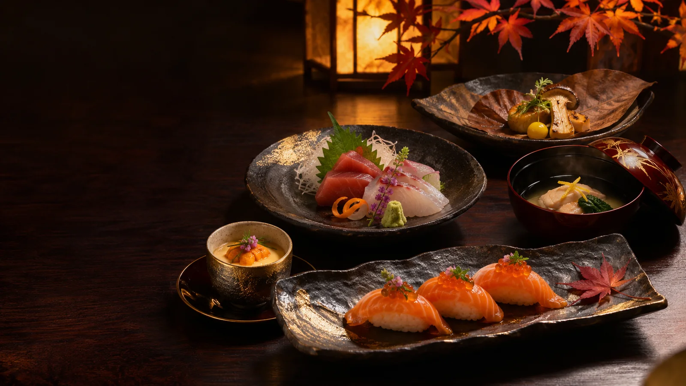

TOKYO EXPERIENCE · RULE-BASED PAIRINGНайдите свой
Найдите свой
идеальный вечер
Ответьте на несколько вопросов. Прозрачный подбор по каталогу поможет выбрать блюда и зону; это не AI-чат и не проверка доступности столов.
Начать подбор ↘
Ваши предпочтения
Соберите атмосферу
Настройки используются только для подбора в этом браузере; данные не отправляются.
Для чего вы планируете вечер?
Какие вкусы ближе?
Ориентир на вечер
Сумма в тенге на одного гостя. Это ориентир для сортировки, а не предложение ресторана.
Сколько вас будет?
Где хочется провести вечер?
Рекомендации основаны на названиях и описаниях блюд каталога. Состав, аллергены, цены и бронирование уточняются отдельно.